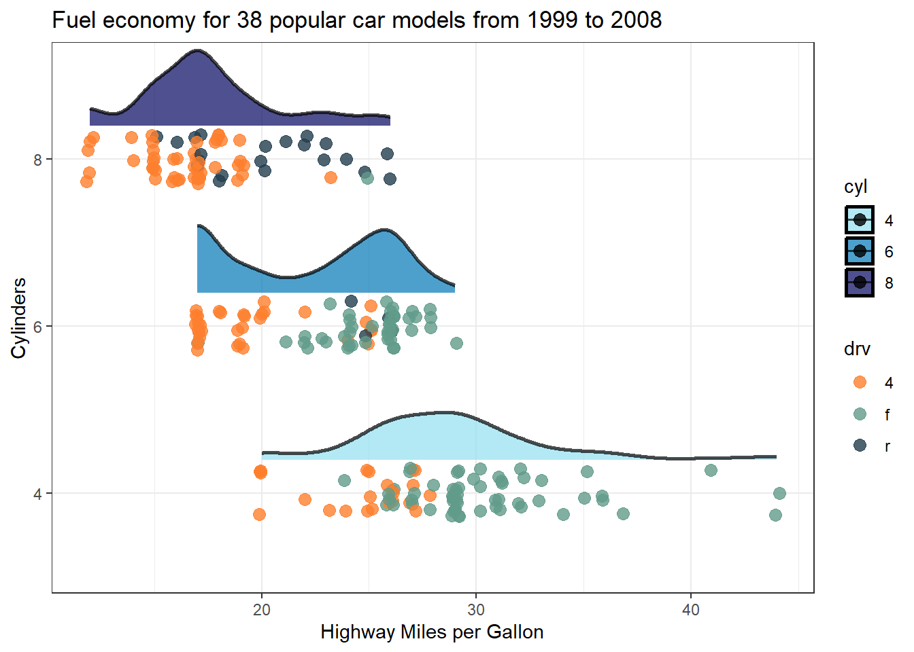
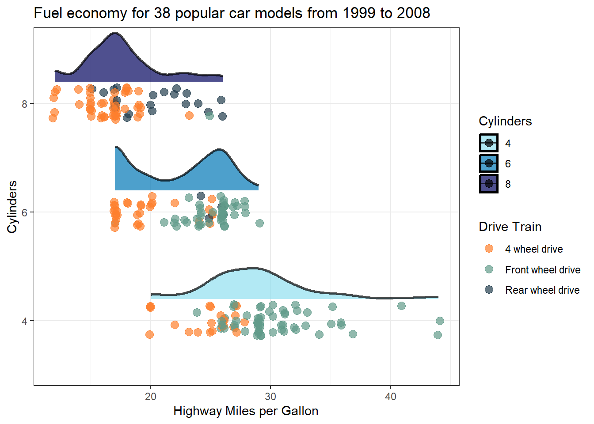

library(tidyverse)
library(mdthemes)
data(mtcars)
base_plot <- ggplot(mtcars, aes(hp, mpg)) +
geom_point(size = 4, alpha = 0.6, colour = "#22333b") +
geom_smooth(size = 1.5, se = F, colour = "#3a86ff") +
labs(title = "Example of a plot **embedded** within another",
subtitle = "Using the function *'annotation_custom()'*") +
md_theme_bw() +
xlim(50, 200)R
R
A worthy collection of short R commands and tricks

A worthy collection of short R commands and tricks. üëç As featured in R Weekly 2023-W44
Using {custom_annotation} to embed one plots inside another.
Embedded plots can be a powerful tool for showcasing data across an extended axis while still emphasizing specific sections.
Creating these are very easy. Here is a quick guide and example:
Step 1: Create your base plot.
Begin by establishing your base plot, which will serve as the canvas for your embedded plot. Typically, the base plot is the primary focus of your visualization.
Step 2: Create your plot that you want to embed within the canvas.
Your embedded plot doesn’t have to be the same type as your base plot. Feel free to customize it according to your data visualization needs.
embedded_plot <- ggplot(mtcars, aes(hp, mpg)) +
geom_point(size = 4, alpha = 0.6, colour = "#22333b") +
geom_smooth(size = 1.5, se = F, colour = "#3a86ff") +
md_theme_bw()Step 3: Use custom_annotate() to embed the plot.
Now, it’s time to embed the plot within the canvas using the annotation_custom() function. You’ll need to specify the X and Y positions for the embedded plot:
base_plot + annotation_custom(ggplotGrob(embedded_plot),
xmin = 125,
xmax = 200,
ymin = 22,
ymax = 35)
Adding linking colours to plot titles instead of a legend
Enhancing your plot titles with linking colours üåà is a clever strategy to maximise your plot realestate by eliminating legends, all while looking fantastic!

To achieve this style you will need:
the {ggtext} package which will perform the HTML rendering, in this case in the subtitle to define the text colour.
Adding
plot.subtitle = element_markdown()to the theme, {ggtext} will perform markdown rendering, for example making specific text bold, or in the above example, italicised.and finally, adding
legend.position = "none"also to the theme will remove the old clunky default legend
Here is the full code üëá enjoy!
library(ggplot2) # For plotting
library(palmerpenguins) # For the example penguin dataset
library(ggtext) # For HTML rendering of text to support colour
# Also for Markdown rendering of text
ggplot(data = penguins,
aes(x = flipper_length_mm,
y = body_mass_g)) +
geom_point(aes(color = species,
shape = species),
size = 2) +
scale_color_manual(values = c("#FF8C00","#9932CC","#008B8B")) +
labs(title = "Penguin flipper length versus body mass",
subtitle = "Penguin species
<span style='color:#FF8C00;'>*Pygoscelis adeliae*</span>,
<span style='color:#9932CC;'>*Pygoscelis papua*</span> and
<span style='color:#008B8B;'>*Pygoscelis antarcticus*</span>",
x = "Flipper Length (mm)",
y = "Body Mass (g)") +
theme_minimal() +
theme(panel.grid = element_blank(),
plot.subtitle = element_markdown(),
legend.position = "none")If you want to go a step further you can add the corresponding point shape/symbol to the subtitle as wellüéâ

All you need to do is add the HTML Unicode (e.g. ● for ●) for the matching symbol/shape to the subtitle. You can look up the HTML Unicode here.
Note
For some reason when viewing the plot in the Rstudio plot tab, additional spaces (relative to the length of the Unicode) will appear next to the symbols. However, this disappears when you render the image in a quarto document or save the plot as an image.
Here is the full code üëá enjoy!
library(ggplot2) # For plotting
library(palmerpenguins) # For the example penguin dataset
library(ggtext) # For HTML rendering of text to support colour
# Also for Markdown rendering of text
# Get HTML code for genometric symbols from:
# https://www.htmlsymbols.xyz/geometric-symbols
ggplot(data = penguins,
aes(x = flipper_length_mm,
y = body_mass_g)) +
geom_point(aes(color = species,
shape = species),
size = 2) +
scale_color_manual(values = c("#FF8C00","#9932CC","#008B8B")) +
labs(title = "Penguin flipper length versus body mass",
subtitle = "Penguin species
<span style='color:#FF8C00;'>*Pygoscelis adeliae* ●</span>,
<span style='color:#9932CC;'>*Pygoscelis papua* ⯅</span> and
<span style='color:#008B8B;'>*Pygoscelis antarcticus* ⯀</span>",
x = "Flipper Length (mm)",
y = "Body Mass (g)") +
theme_minimal() +
theme(panel.grid = element_blank(),
plot.subtitle = element_markdown(),
legend.position = "none")Transform axis numbers into more readable formats
Want to avoid number labels on your plots that are difficult to read or interpret such as the all too common scientific e notation as seen in this example? üëá

The label_number_si() function from the {scales} package will conveniently convert your unclear labels to a more appropriate format. Lets apply it to our example from above. ü•≥üéâ

Here is the full code üëá enjoy!
library(ggplot2) # For plotting
library(ggtext) # For HTML rendering of text to support colour
# Also for Markdown rendering of text
library(scales)
data2 <- tibble::tribble(
~Month, ~Year, ~Region, ~Production_Litres,
"July", "22/23", "NSW", 80742825.35,
"August", "22/23", "NSW", 85515267.53,
"September", "22/23", "NSW", 89642883.77,
"October", "22/23", "NSW", 92774430.63,
"November", "22/23", "NSW", 86431638.4,
"December", "22/23", "NSW", 86230113.71,
"January", "22/23", "NSW", 81030159.32,
"February", "22/23", "NSW", 72891273.03,
"March", "22/23", "NSW", 78366274.94,
"April", "22/23", "NSW", 75805741.9,
"May", "22/23", "NSW", 79986532.53,
"June", "22/23", "NSW", 80446060.32,
"July", "22/23", "VIC", 386373862.86,
"August", "22/23", "VIC", 450615318.9,
"September", "22/23", "VIC", 527734837.67,
"October", "22/23", "VIC", 575715726.1,
"November", "22/23", "VIC", 519338047.94,
"December", "22/23", "VIC", 499009041.08,
"January", "22/23", "VIC", 423251928.39,
"February", "22/23", "VIC", 323689836.55,
"March", "22/23", "VIC", 333750042.9,
"April", "22/23", "VIC", 340058086.75,
"May", "22/23", "VIC", 388157951.5,
"June", "22/23", "VIC", 373346197.82,
"July", "22/23", "Australia", 570199372.1,
"August", "22/23", "Australia", 659242110.71,
"September", "22/23", "Australia", 797167795.77,
"October", "22/23", "Australia", 888535142.24,
"November", "22/23", "Australia", 818914946.8,
"December", "22/23", "Australia", 790237598.05,
"January", "22/23", "Australia", 693408820.19,
"February", "22/23", "Australia", 553467890.76,
"March", "22/23", "Australia", 580325765.96,
"April", "22/23", "Australia", 577153026.75,
"May", "22/23", "Australia", 623257518.13,
"June", "22/23", "Australia", 576627597.06,
"July", "23/24", "NSW", 87662230.03,
"August", "23/24", "NSW", 93724243.26,
"September", "23/24", "NSW", 96012475.27,
"July", "23/24", "VIC", 382943134.47,
"August", "23/24", "VIC", 447394128.72,
"September", "23/24", "VIC", 526453329.78,
"July", "23/24", "Australia", 576952581.71,
"August", "23/24", "Australia", 670893737.51,
"September", "23/24", "Australia", 809301895.87
)
data <- data |> mutate(Month = factor(Month, levels = c("July", "August", "September", "October", "November", "December", "January", "February", "March", "April", "May", "June")))
ggplot(data = data, aes(x = Month, y = Production_Litres, colour = Region, linetype = Year, group = interaction(Region, Year))) +
geom_smooth(se=FALSE) +
scale_color_manual(values = c("#000000","#428bca","#b5b682")) +
scale_y_continuous(labels = scales::label_number_si()) +
labs(title = "Australian Dairy Milk Production",
subtitle = "<span style='color:#000000;'>**National Production**</span> and key dairy states
<span style='color:#b5b682;'>**Victoria**</span> and
<span style='color:#428bca;'>**New South Wales.**</span>",
x = "",
y = "Production (Litres)",
caption = "Data Source: Dairy Australia Milk Production Report September 2023") +
theme_classic() +
theme(panel.grid = element_blank(),
plot.subtitle = element_markdown(),
legend.position = "top") +
theme(axis.text.x = element_text(angle = 90, vjust = 0.5, hjust=1)) +
guides(colour = "none", linetype = guide_legend(override.aes = list(color = "#000000")))Elegantly Join 3+ tibbles using a common key
Joining two tibbles is simple and concise using the join commands from dplyr. However, when you have three or more tibbles to join, you will often find yourself either writing a long pipe or taking a stepwise approach of joining the first two into a new object and using that to join with the third tibble, and so on.
Nevertheless, you can avoid all this by combining the reduce function from the üêà‚Ä炨õ purrr package with the relevant join command. Below is a simple example. üëá
library(dplyr)
library(purrr)
dt1 <- tibble(character = c("Harry", "Hermione", "Draco"),
house = c("Gryffindor", "Gryffindor", "Slytherin"))
dt2 <- tibble(character = c("Harry", "Hermione", "Draco"),
wand = c("Holly-phonenix-feather", "Vine-dragon-heartstring", "Hawthorn-unicorn-hair"))
dt3 <- tibble(character = c("Harry", "Hermione", "Draco"),
gender = c("Male", "Female", "Male"))
reduce(list(dt1, dt2, dt3), left_join, by = 'character')# A tibble: 3 x 4
character house wand gender
<chr> <chr> <chr> <chr>
1 Harry Gryffindor Holly-phonenix-feather Male
2 Hermione Gryffindor Vine-dragon-heartstring Female
3 Draco Slytherin Hawthorn-unicorn-hair Male Add a prefix to column names when pivoting from long-data to wide-data
At times, you may find it necessary to apply a prefix to the column names created when transitioning from long-format data to wide-format data. The good news is that the pivot_wider() function streamlines this process by offering the names_prefix argument. This feature proves particularly valuable when working with multiple tibbles that share similar naming conventions and structures. After all, nobody enjoys dealing with default conflict resultion of identical column names like colname1.x, colname1.y, colname2.x, colname2.y, and so on.
library(tidyr)
library(tibble)
weather <- tribble(
~Date, ~Measurement, ~Value,
20100101L, "T.Max_oC", 31.2,
20100102L, "T.Max_oC", 31.7,
20100103L, "T.Max_oC", 32.5,
20100104L, "T.Max_oC", 28.9,
20100101L, "T.Min_oC", 21.3,
20100102L, "T.Min_oC", 21.5,
20100103L, "T.Min_oC", 22.2,
20100104L, "T.Min_oC", 22.1,
20100101L, "Rain_mm", 0.6,
20100102L, "Rain_mm", 0.4,
20100103L, "Rain_mm", 0.8,
20100104L, "Rain_mm", 6.8,
20100101L, "Evap_mm", 4.1,
20100102L, "Evap_mm", 4.6,
20100103L, "Evap_mm", 5.9,
20100104L, "Evap_mm", 4.4
)
weather# A tibble: 16 x 3
Date Measurement Value
<int> <chr> <dbl>
1 20100101 T.Max_oC 31.2
2 20100102 T.Max_oC 31.7
3 20100103 T.Max_oC 32.5
4 20100104 T.Max_oC 28.9
5 20100101 T.Min_oC 21.3
6 20100102 T.Min_oC 21.5
7 20100103 T.Min_oC 22.2
8 20100104 T.Min_oC 22.1
9 20100101 Rain_mm 0.6
10 20100102 Rain_mm 0.4
11 20100103 Rain_mm 0.8
12 20100104 Rain_mm 6.8
13 20100101 Evap_mm 4.1
14 20100102 Evap_mm 4.6
15 20100103 Evap_mm 5.9
16 20100104 Evap_mm 4.4weather |>
pivot_wider(names_from = Measurement,
names_prefix = "UQGatton_",
values_from = Value)# A tibble: 4 x 5
Date UQGatton_T.Max_oC UQGatton_T.Min_oC UQGatton_Rain_mm UQGatton_Evap_mm
<int> <dbl> <dbl> <dbl> <dbl>
1 20100101 31.2 21.3 0.6 4.1
2 20100102 31.7 21.5 0.4 4.6
3 20100103 32.5 22.2 0.8 5.9
4 20100104 28.9 22.1 6.8 4.4Initalise an empty tibble with predined column names
Before diving into a loop of calculations, it‚Äôs often beneficial to initialise an empty tibble to seamlessly store results from each iteration. Instead of manually specifying column names, you can streamline the process by leveraging the power of the map_dfc() command in {purrr} üêà Simply pass a vector of column names to tibble, and watch your data structure effortlessly take shape.
vec_colnames <- c("Wizard", "House", "Wand")
empty_tibble <- vec_colnames |>
purrr::map_dfc(setNames, object = list(character()))
empty_tibble# A tibble: 0 x 3
# i 3 variables: Wizard <chr>, House <chr>, Wand <chr>map_dfc() has now been superseded üèó by map() and I have also updated the code to be more explicate and inline with {purrr} recommendations. Thanks Jim Gardner for the suggestions and edits.
vec_colnames <- c("Wizard", "House", "Wand")
empty_tibble <- vec_colnames |>
purrr::map(\(x) setNames(object = tibble::tibble(character()), nm = x)) |>
purrr::list_cbind()
empty_tibble# A tibble: 0 x 3
# i 3 variables: Wizard <chr>, House <chr>, Wand <chr>Highlight points of interest with annotations
Utilising arrow and text annotations can significantly elevate the impact of your visualisations by directing attention to crucial data points or subsets within a plot. These annotations serve as a powerful tool to effectively convey your message to the reader. Checkout the following example for a demonstration.
Here is the full code üëá showing how to use the annotate function, enjoy!
library(ggplot2)
library(ggtext)
ngs_data <- tibble::tribble(
~Platform, ~Yield, ~Price_per_Gb, ~Company, ~Flowcells, ~Yield_per_flowcell,
"ILMN NextSeq 550 1fcell", 120L, 43.8, "Illumina", 1L, 120L,
"ILMN HiSeq 4000 2fcells", 1500L, 25, "Illumina", 2L, 750L,
"ILMN NextSeq 1000 P1/P2 1fcell", 120L, 30.61, "Illumina", 1L, 120L,
"ILMN NextSeq 2000 P3 1fcell", 360L, 17.3, "Illumina", 1L, 360L,
"ILMN NovaSeq SP 2fcells", 800L, 10.9, "Illumina", 2L, 400L,
"ILMN NovaSeq S1 2fcells", 1000L, 10.9, "Illumina", 2L, 500L,
"ILMN NovaSeq S2 2fcells", 2000L, 7.97, "Illumina", 2L, 1000L,
"ILMN NovaSeq S4 v1.5 2fcells", 6000L, 4.84, "Illumina", 2L, 3000L,
"ILMN NovaSeq X & X Plus 1.5B 10B 2fcells", 6000L, 3.2, "Illumina", 2L, 3000L,
"ILMN NovaSeq X 25B 1fcells", 8000L, 2, "Illumina", 1L, 8000L,
"ElemBio AVITI 2fcell x3 pricing model", 1800L, 2, "ElementBio", 2L, 900L,
"ElemBio AVITI 2fcell 2x150 Cloudbreak", 600L, 5, "ElementBio", 2L, 300L,
"ElemBio AVITI 2fcell 2x300 Cloudbreak", 360L, 13.55555556, "ElementBio", 2L, 180L,
"Singular Genomics G4 F2 4fcell Standard", 200L, 16, "Singular Genomics", 4L, 50L,
"Singular Genomics G4 F2 4fcell Max Read", 200L, 16, "Singular Genomics", 4L, 50L,
"Singular Genomics G4 F3 4fcell", 540L, 8, "Singular Genomics", 4L, 135L,
"MGI DNBSEQ-T7 4fcells", 6000L, 1.5, "MGI", 4L, 1500L,
"MGI DNBSEQ-G400C CoolMPS 2fcells", 1440L, 5, "MGI", 2L, 720L,
"MGI DNBSEQ-G400RS HotMPS 2fcells", 720L, 5.8, "MGI", 2L, 360L
)
ggplot(data = ngs_data, aes(x=Yield_per_flowcell, y=Price_per_Gb, colour=Company, fill=Company)) +
geom_point(size=2) +
scale_y_continuous(trans = "log10") +
scale_x_continuous(trans = "log10") +
scale_color_manual(values = c("Illumina" = "#FFB542",
"MGI" ="#006AB7",
"ElementBio" = "#12B460",
"Singular Genomics" = "#1E1E1E")) +
theme_classic() +
ylab("Price per Gb ($)") +
xlab("Yield per Flowcell (Gb)") +
annotate(geom = "curve",
x = 400, y = 2.5,
xend = 800, yend = 2,
curvature = .3,
arrow = arrow(length = unit(2, "mm"))) +
annotate(geom = "text", x = 300, y = 3, label = paste(strwrap("Newer companies like Element Biosciences are challanging Illumina's price point in the mid-tier benchtop sequencing category", width = 70), collapse = "\n"), hjust = "centre", size=3) +
labs(title = "Sequencing costs for current benchtop and production-scale platforms",
subtitle = "Companies
<span style='color:#FFB542;'>**Illumina**</span>,
<span style='color:#006AB7;'>**MGI**</span>,
<span style='color:#12B460;'>**Element Biosciences**</span> and
<span style='color:#1E1E1E;'>**Singular Genomics**</span>",
caption = "Note: X & Y axis log10 transformed. \n Data Source: Next-Generation-Sequencing.v1.10.31 @albertvilella") +
theme(panel.grid = element_blank(),
plot.subtitle = element_markdown(),
legend.position = "none")Order a boxplot for improved across axis comparisions
If you are using a boxplot to demonstrate differences across multiple groups you may encounter the problem whereby the standard order of groups results in a saw tough pattern which can make it difficult to compare across groups üòïüëá
When creating a boxplot to showcase differences and variations among multiple groups, you might run into an issue where the default order of groups creates a jagged pattern üëá This can really complicate the comparison process across these groups üòï
To enhance the clarity of your visual representation and make comparisons easier, you should consider reordering the groups in a more intuitive or meaningful sequence. This can help in presenting the data in a way that is more easily understandable and conducive to drawing accurate conclusions.
To reorder x from low to high based on y-values use the reorder function within the ggplot mappings.
Here is the full code üëá showing how to use the reorder function, enjoy!
library(tidyverse)
ggplot(mpg, aes(x = reorder(manufacturer, cty, na.rm = TRUE), y = cty)) +
geom_boxplot(fill = "#219ebc") +
geom_dotplot(binaxis='y',
stackdir='center',
dotsize=0.5,
fill = "#f4a261") +
theme(axis.text.x = element_text(angle=65, vjust=0.6)) +
labs(title="City Mileage vs Class",
subtitle="Ordered x axis",
caption="Source: mpg",
x="Class of Vehicle",
y="City Mileage")Labelling Legends
Legend titles and value labels in visual representations by default often lack clarity and may appear disorganized. This happens as they’re directly derived from data and column headings, typically designed to be concise and format-free in programming. Consequently, they might seem puzzling or cluttered. Consider the plot below: if you’re acquainted with the mpg dataset, you’d recognise drv as denoting drive train type—where 4 stands for 4-wheel drive, f for front-wheel drive, and r for rear-wheel drive, while cyl indicates the number of cylinders.
However, if you do not know of the mpg dataset, which lets be honest is the likely scenario of your target audience, then you might just leave them as puzzled as a possum üòï
Warning: package 'ggdist' was built under R version 4.1.3
However correcting this in your plots is dead simple. Just add label and name (title) details to the scale_colour_* and scale_fill_* functions as demonstrated below üëá
ggplot(data = mpg |>
filter(cyl != 5) |>
mutate(cyl = as.factor(cyl)),
aes(x = hwy, y = cyl, fill = cyl)) +
stat_halfeye(
point_color = NA, .width = 0, height = 0.5,
position = position_nudge(y = 0.2),
alpha = 0.7,
slab_colour = "black"
) +
geom_point(position = position_jitter(width = 0.2, height = 0.15, seed = 1),
alpha = 0.7,
size = 3,
aes(colour = drv)) +
scale_colour_manual(values = c("#fe7f2d", "#619b8a", "#233d4d"),
1 labels = c("4 wheel drive",
"Front wheel drive",
"Rear wheel drive"),
2 name = "Drive Train") +
scale_fill_manual(values = c("#90e0ef", "#0077b6", "#03045e"),
3 name = "Cylinders") +
theme_bw() +
ylab("Cylinders") +
xlab("Highway Miles per Gallon") +
ggtitle("Fuel economy for 38 popular car models from 1999 to 2008")- 1
- Add new labels to the three point data categories
- 2
- Add a name/title to the point data legend
- 3
- Add a name/title to the distribution data legend

Be a champion and help out your audience üëç
Extracting array indexes of the maximum value
Quick one here, you might have become accustomed to the ability to return array indexes (row & col numbers) within the which() function by adding the arr.ind = T parameter. Turns out though this isn‚Äôt available in the which.max() function. I will leave you to ponder the ‚Äòwhy‚Äô background behind that‚Ķü§î
Simple solution, all you need to do is pass the index value returned from which.max() to the arrayInd() function. See below, with and without pipes depending on your style üëá
mat <- matrix(rnorm(400), nrow = 20)
# With pipes
mat |> (\(.)arrayInd(which.max(.), .dim = dim(.)))()
# Without pipes
arrayInd(which.max(mat), .dim = dim(mat))Happy days üçπ
Reversing continous colour gradients
Ever thought that colour scale in your ggplot would look better reverse ü§î Its super simple üëá
ggplot(data = mpg |>
filter(cyl != 5) |>
mutate(cyl = as.factor(cyl)),
aes(x = hwy, y = cyl, fill = stat(x))) +
geom_density_ridges_gradient() +
1 scale_fill_viridis_c(name = "Miles per Gallon", option = "C", trans = "reverse") +
theme_bw() +
xlab("Highway Miles per Gallon") +
ylab("Cylinders") +
ggtitle("Fuel economy for 38 popular car models from 1999 to 2008")- 1
-
Add
trans = "reverse"
Picking joint bandwidth of 1.21…well maybe not the right plot to reverse the colour scale, but you get the point.